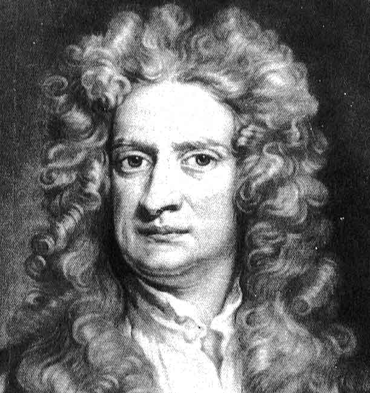

Sir Isaac Newton

Black and white portrait of Isaac Newton
Biography of Isaac Newton
Isaac Newton, born on January 4, 1643, in Woolsthorpe, England, was a brilliant mathematician, physicist, and astronomer. His groundbreaking work in calculus, optics, and the laws of motion revolutionized science. Newton's "Philosophiæ Naturalis Principia Mathematica," published in 1687, laid the foundation for modern physics with his laws of motion and universal gravitation. Knighted by Queen Anne in 1705, Newton's legacy endures as one of the most influential scientists of all time. He passed away on March 31, 1727, in London, England.
Isaac Newton's Fundamental Scientific Discoveries
- Formulating the laws of motion
- Developing calculus
- Conducting groundbreaking research in optics
- Establishing the law of universal gravitation
- Serving as a distinguished professor at Cambridge University